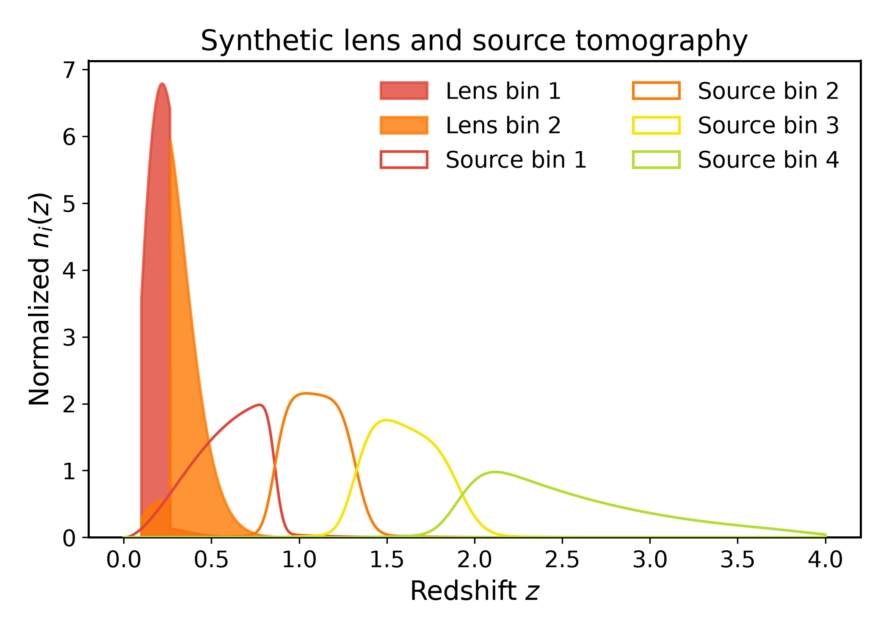
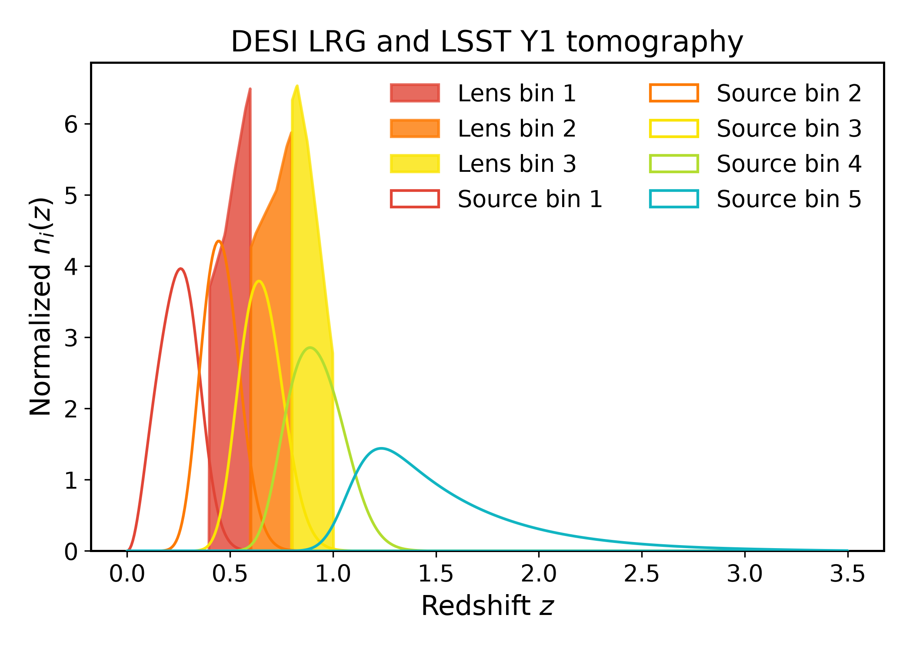

Tomography¶
Tomography¶
DSF uses Binny to construct lens and source tomography from survey presets, custom redshift distributions, or predefined bins.
The TomographyBuilder interface
configures both samples and selects lens-source pairs. Its prepare_bins()
method returns the tomographic distributions, population statistics, bin
centers, and selected pairs.
Synthetic tomography¶
Binny constructs two spectroscopic lens bins and four photometric source bins from Smail redshift distributions. The lenses include spectroscopic uncertainties, while the sources include photometric scatter, mean-redshift offsets, and 5% outliers. The resulting bins are passed to DSF with number-density metadata.
from itertools import cycle
import matplotlib.pyplot as plt
import numpy as np
from binny import build_tomography_from_spec
from dsf import DSF_COLORS
from dsf.tomography.tomo_builder import TomographyBuilder
z_lens = np.linspace(0.1, 1.5, 500)
z_source = np.linspace(0.0, 4.0, 500)
def smail_nz(z, z0, alpha, beta):
nz = z**alpha * np.exp(-(z / z0)**beta)
return nz / np.trapezoid(nz, z)
nz_lens = smail_nz(z_lens, z0=0.18, alpha=2.0, beta=1.5)
nz_source = smail_nz(z_source, z0=0.5, alpha=2.0, beta=1.0)
lens_result = build_tomography_from_spec(
z=z_lens,
nz=nz_lens,
tomo_spec={
"kind": "specz",
"bins": {"scheme": "equipopulated", "n_bins": 2},
"uncertainties": {
"completeness": [0.99] * 2,
"catastrophic_frac": 0.01,
"leakage_model": "neighbor",
"specz_scatter": 0.03,
},
},
)
source_result = build_tomography_from_spec(
z=z_source,
nz=nz_source,
tomo_spec={
"kind": "photoz",
"bins": {"scheme": "equipopulated", "n_bins": 4},
"uncertainties": {
"scatter_scale": [0.02, 0.03, 0.035, 0.04],
"mean_offset": 0.005,
"outlier_frac": 0.05,
"outlier_scatter_scale": 0.15,
},
},
)
tomo = TomographyBuilder(
lens={
"z": z_lens,
"bins": lens_result.bins,
"config": {
"sample_properties": {
"number_density": {
"n_gal_comoving_h3_mpc3": 3e-4,
},
},
"population_fractions": {
i: 1 / 2 for i in lens_result.bins
},
},
},
source={
"z": z_source,
"bins": source_result.bins,
"config": {
"sample_properties": {
"number_density": {"n_gal_arcmin2": 20.0},
},
"population_fractions": {
i: 1 / 4 for i in source_result.bins
},
},
},
overlap_threshold=0.10,
source_behind_lens=True,
)
inputs = tomo.prepare_bins()
lens = inputs["lens_result"]
source = inputs["source_result"]
fig, ax = plt.subplots()
for (key, nz), color in zip(
sorted(lens.bins.items()), cycle(DSF_COLORS)
):
z = np.asarray(lens.z).reshape(-1)
nz = np.asarray(nz).reshape(-1)
ax.fill_between(
z, 0, nz,
facecolor=color,
edgecolor=color,
alpha=0.8,
zorder=2,
label=f"Lens bin {key + 1}",
)
for (key, nz), color in zip(
sorted(source.bins.items()), cycle(DSF_COLORS)
):
z = np.asarray(source.z).reshape(-1)
nz = np.asarray(nz).reshape(-1)
ax.fill_between(
z, 0, nz,
facecolor="none",
edgecolor=color,
zorder=3,
label=f"Source bin {key + 1}",
)
ax.set(
xlabel=r"Redshift $z$",
ylabel=r"Normalized $n_i(z)$",
title="Synthetic lens and source tomography",
)
ax.set_ylim(bottom=0)
ax.legend(frameon=False, ncol=2)
fig.tight_layout()
plt.show()

print("Selected lens-source pairs:")
for lens_bin, source_bin in inputs["bin_pairs"]:
print(f" Lens {lens_bin + 1} - Source {source_bin + 1}")
Survey tomography¶
This example uses the survey presets provided by Binny to construct three DESI LRG lens bins and LSST Y1 source bins. Lens-source pairs are selected by requiring the mean source redshift to exceed the mean lens redshift, with at most 10% fractional overlap.
Lens distributions are filled, while source distributions are shown as unfilled colored outlines.
from itertools import cycle
import matplotlib.pyplot as plt
import numpy as np
from dsf import DSF_COLORS
from dsf.tomography.tomo_builder import TomographyBuilder
tomo = TomographyBuilder(
lens={
"survey": "desi",
"sample": "lrg",
"role": "lens",
"overrides": {
"bins": {"edges": [0.4, 0.6, 0.8, 1.0]},
},
},
source={
"survey": "lsst",
"year": "1",
"role": "source",
},
overlap_threshold=0.10,
source_behind_lens=True,
)
inputs = tomo.prepare_bins()
lens = inputs["lens_result"]
source = inputs["source_result"]
fig, ax = plt.subplots()
for (key, nz), color in zip(
sorted(lens.bins.items()), cycle(DSF_COLORS)
):
z = np.asarray(lens.z).reshape(-1)
nz = np.asarray(nz).reshape(-1)
ax.fill_between(
z, 0, nz,
facecolor=color,
edgecolor=color,
alpha=0.8,
zorder=2,
label=f"Lens bin {key + 1}",
)
for (key, nz), color in zip(
sorted(source.bins.items()), cycle(DSF_COLORS)
):
z = np.asarray(source.z).reshape(-1)
nz = np.asarray(nz).reshape(-1)
ax.fill_between(
z, 0, nz,
facecolor="none",
edgecolor=color,
zorder=3,
label=f"Source bin {key + 1}",
)
ax.set(
xlabel=r"Redshift $z$",
ylabel=r"Normalized $n_i(z)$",
title="DESI LRG and LSST Y1 tomography",
)
ax.set_ylim(bottom=0)
ax.legend(frameon=False, ncol=2)
fig.tight_layout()
plt.show()

print("Selected lens-source pairs:")
for lens_bin, source_bin in inputs["bin_pairs"]:
print(f" Lens {lens_bin + 1} - Source {source_bin + 1}")
Configuration¶
TomographyBuilder accepts separate lens and source dictionaries.
For survey presets, the supported entries include:
survey: Survey name, such as"desi"or"lsst".sample: Galaxy sample, such as"lrg".year: Survey observing year.role: Sample role,"lens"or"source".scenario: Optional survey scenario.overrides: Modifications to the Binny preset.
When omitted, the lens and source configurations default to DESI LRG and LSST, respectively.
For custom redshift distributions, provide:
z: Redshift grid.nz: Parent redshift distribution.config: Binny tomography specification containing the binning scheme and optional uncertainty parameters.
For predefined bins, provide z, bins, and config instead.
Lens-source pair selection is controlled by:
overlap_threshold: Maximum fractional redshift-distribution overlap (default0.10).source_behind_lens: Require the mean source-bin redshift to exceed the mean lens-bin redshift (defaultTrue).
Bin centers are calculated from the mean redshift of each distribution.
Tomography products¶
prepare_bins() returns a dictionary with the following entries:
lens_result,source_result: BinnyTomographyobjects.lens_bin_centers,source_bin_centers: Mean bin redshifts.lens_population_stats,source_population_stats: Population statistics, including number densities.lens_shape_stats,source_shape_stats: Shape statistics.lens_metadata,source_metadata: Tomographic metadata.bin_pairs: Selected lens-source index pairs.
Each Binny Tomography result provides z, nz, bins,
metadata, spec, and survey_metadata attributes. The
metadata attribute replaces the old tomo_meta interface.
For example:
inputs = tomo.prepare_bins()
bin_pairs = inputs["bin_pairs"]
lens_density = inputs["lens_population_stats"]["density_per_bin"]
lens_metadata = inputs["lens_result"].metadata
Bin indices are zero-based and correspond to the Binny bin dictionary keys.
Predefined tomographic bins¶
Precomputed tomography, as in the synthetic example, requires:
z: Redshift grid.bins: Dictionary of bin-indexed redshift distributions.config: Binny metadata containingsample_propertiesandpopulation_fractions.
The sample properties must provide number-density information. Population fractions must be nonnegative and sum to one.
See the Binny documentation for additional survey presets and tomography configuration options.